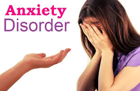
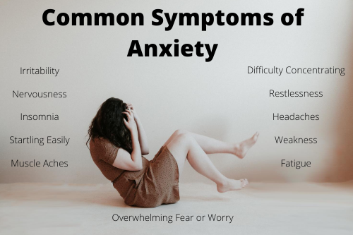

Anxiety Disorder

What is Anxiety Disorder?
Anxiety is what we feel when we are worried, tense or afraid – particularly about things that are about to happen, or which we think could happen in the future.
Anxiety is a natural human response when we feel that we are under threat. It can be experienced through our thoughts, feelings and physical sensations."For me, anxiety feels as if everyone in the world is waiting for me to trip up, so
that they can laugh at me. It makes me feel nervous and unsure whether the next step I take is the best way forward."
Most people feel anxious at times. It's particularly common to experience some anxiety while coping with stressful events or changes, especially if they could have a big impact
on your life.
What are Anxiety disorder?
Anxiety can be experienced in lots of different ways. If your experiences meet certain criteria your doctor might diagnose you with a specific anxiety disorder.
Some commonly diagnosed anxiety disorders are:
- Generalised anxiety disorder (GAD) – this means having regular or uncontrollable worries about many different things in your everyday life. Because there are lots of possible symptoms of anxiety this can be quite a broad diagnosis, meaning that
the problems you experience with GAD might be quite different from another person's experiences.
- Social anxiety disorder – this diagnosis means you experience extreme fear or anxiety triggered by social situations (such as parties, workplaces, or everyday
situations where you have to talk to another person). It is also known as social phobia. See our section on types of phobia for more information.
- Panic disorder – this means having regular or frequent panic attacks without a clear cause or trigger. Experiencing panic disorder can mean that you feel
constantly afraid of having another panic attack, to the point that this fear itself can trigger your panic attacks. See our section on panic attacks for more information.
- Phobias – a phobia is an extreme fear or anxiety triggered by a particular situation (such as going outside) or a particular object (such as spiders). See our resource on phobias for more information.
- Post-traumatic stress disorder (PTSD) – this is a diagnosis you may be given if you develop anxiety problems after going through something you found traumatic.
- Health anxiety – this means you experience obsessions and compulsions relating to illness, including researching symptoms or checking to see if you have them.
- Obsessive-compulsive disorder (OCD) – you may be given this diagnosis if your anxiety problems involve having repetitive thoughts, behaviours or urges.
What are the symptoms of Anxiety disorder?
Anxiety feels different for everyone. You might experience some of the physical and mental effects listed in this section, as well as effects in other areas of your life.
You might also have experiences or difficulties with anxiety that aren't recognised here.

Effects of anxiety on your body
These can include:
- a churning feeling in your stomach
- feeling light-headed or dizzy
- pins and needles
- feeling restless or unable to sit still
- headaches, backache or other aches and pains
- faster breathing
- a fast, thumping or irregular heartbeat
- sweating or hot flushes
- sleep problems
- nausea (feeling sick)
- needing the toilet more or less often
- having panic attacks.
Effects of anxiety on your mind
These can include:
- feeling tense, nervous or unable to relax
- having a sense of dread, or fearing the worst
- feeling like the world is speeding up or slowing down
- feeling like other people can see you're anxious and are looking at you
- feeling like you can't stop worrying, or that bad things will happen if you stop worrying
- worrying about anxiety itself, for example worrying about when panic attacks might happen
- wanting lots of reassurance from other people or worrying that people are angry or upset with you
- worrying that you're losing touch with reality
What causes Anxiety
Anxiety may be caused by a mental condition, a physical condition, the effects of drugs, stressful life events, or a combination of these. The doctor's initial task is to see if your anxiety is a symptom of another medical condition. Anxiety disorders are different from normal anxiety.
Everyone's experience of anxiety is different, so it's hard to know exactly what causes anxiety problems. There are probably lots of factors involved.